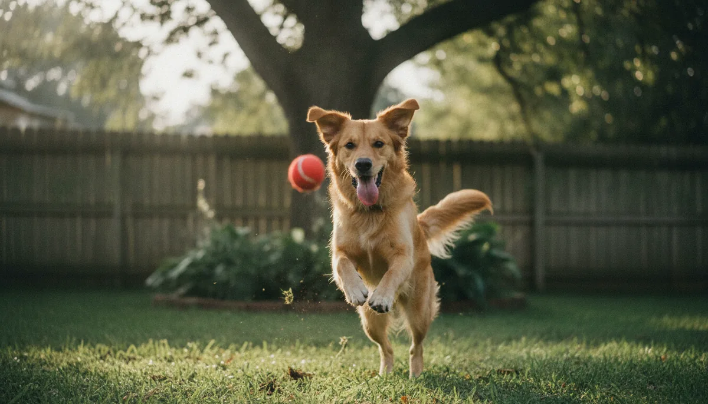
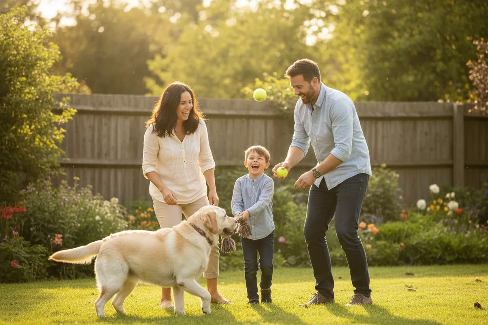
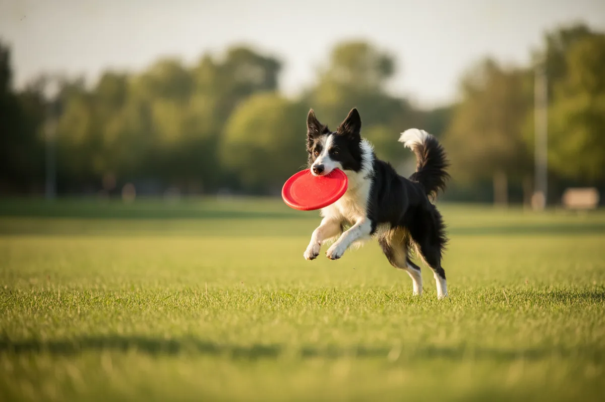
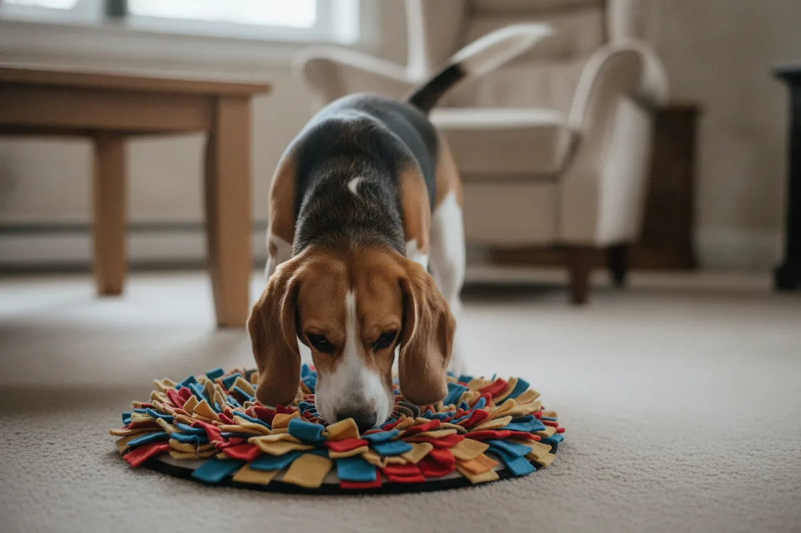
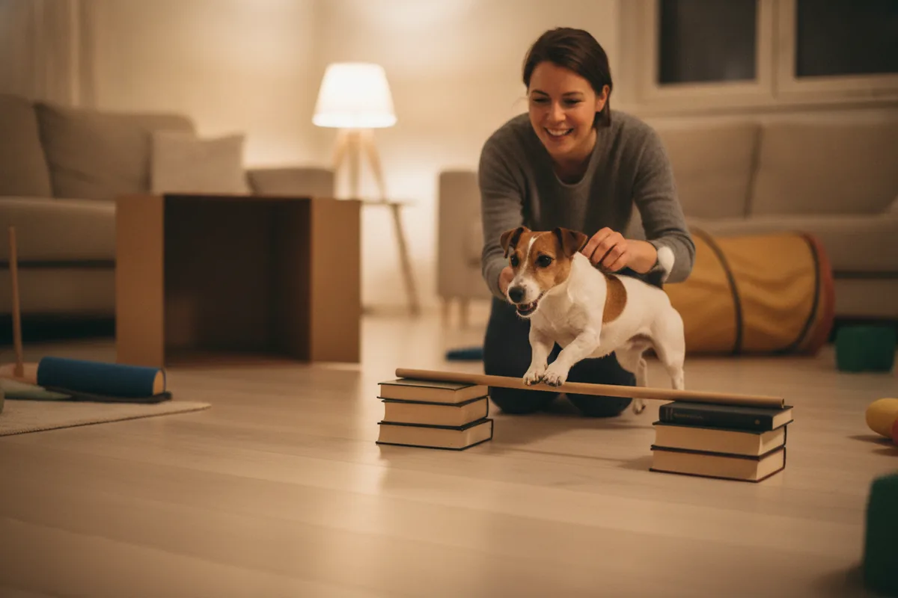
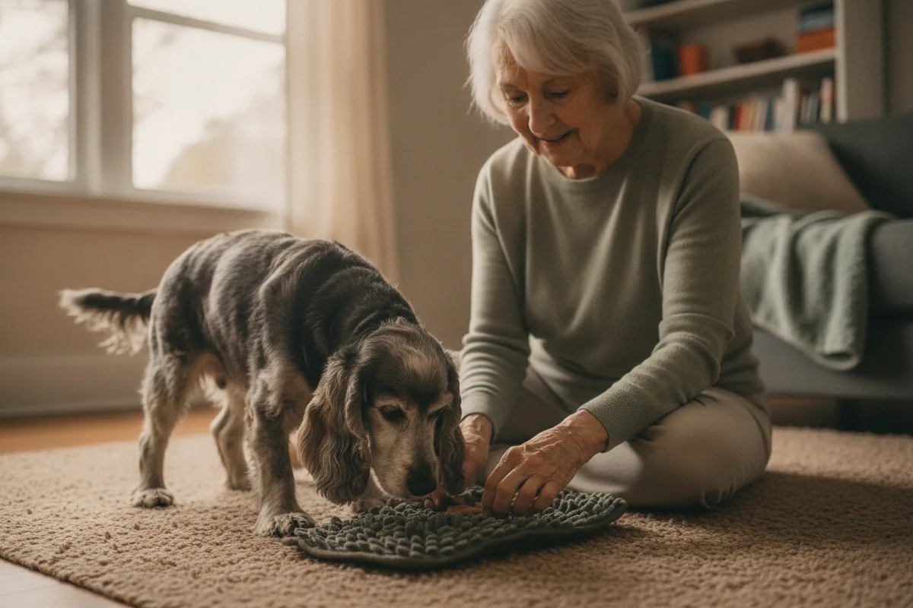

12 Fun Games to Play With Your Dog

A tired dog is a happy dog — but the dogs who settle most contentedly at the end of the day aren't just the ones who've had a long walk. They're the ones whose brains got a workout too. Games do both at once: they burn energy, sharpen the mind, and quietly strengthen the bond between you. Best of all, you don't need fancy gear or a big yard. Here are 12 games — indoor and out, lazy-Sunday and high-energy — that vets and trainers recommend, with simple rules to keep them safe and fun.
And here's the part that matters most: the games are only half of it — you're the other half. Every round of tug or fetch is a few minutes of shared attention, and that's exactly what turns a pet into a partner. Dogs are deeply social, and the bond you build through play tends to show up everywhere else, from better recall to a calmer dog at home.

Classic active games
1. Fetch — with a twist Active
The old favorite, upgraded. Asking your dog to sit and wait before each throw, and to "drop it" on cue when they return, turns plain fetch into an impulse-control workout. Use a soft ball sized so it can't be swallowed, and skip sticks — they splinter and cause mouth injuries. A rubber fetch toy or flying disc made for dogs is safer.
2. Tug-of-war (yes, it's good for them) Active
Tug has an unfair reputation. Done with rules, trainers consider it a great outlet that builds cooperation rather than aggression. The rules: you start and end the game, teach a reliable "drop it," and stop if teeth ever touch skin. Letting your dog "win" sometimes is fine — it keeps the game motivating, not dominating.
3. Flirt pole Active
Think of a giant cat wand for dogs: a pole with a rope and a lure on the end. Whipping it along the ground gives chase-loving, high-energy dogs a huge physical outlet in a small space. Keep sessions short, let them "catch" the lure to end on a win, and avoid sharp turns that strain young joints.
4. Bubbles Active
Surprisingly captivating, and gentle enough for puppies and seniors. Use pet-safe, non-toxic bubbles (some even come bacon-scented) rather than human dish-soap bubbles, which can irritate eyes and stomachs. Great for a quick burst of joy in the backyard.

Brain games & scent work
5. Hide and seek Indoor Brainy
Ask your dog to stay, go hide in another room, then call their name and let them track you down. It rewards their nose and your recall cue at the same time. No reliable "stay" yet? Have a helper hold them, or hide while they're distracted.
6. The cup game (treasure hunt) Indoor Brainy
Place a treat under one of three cups or upturned boxes, shuffle them, and let your dog sniff out the winner. Dogs have roughly 40–50 times more scent receptors than we do, so this plays straight to their superpower. Start easy with one cup, then add more.
7. "Find it" & snuffle mats Indoor Brainy
Scatter a few kibble pieces or low-calorie treats across a snuffle mat (or a towel rolled up with treats inside) and say "find it." Foraging is deeply satisfying for dogs and works wonderfully on rainy days. A bonus: feeding part of a meal this way slows fast eaters down.
8. Puzzle feeders & stuffed toys Indoor Brainy
Food-dispensing balls and rubber toys make your dog problem-solve for dinner. A classic is a hollow rubber toy stuffed with a little peanut butter — just check the label first, because some brands contain xylitol, which is highly toxic to dogs. Frozen, it lasts even longer.
9. Name that toy Indoor Brainy
Dogs can learn the names of dozens of objects. Teach one toy's name at a time ("get Bunny!"), reward the right pick, and slowly build a vocabulary. It's a genuine cognitive challenge that famously border-collie-smart dogs adore — but any breed can play at its own level.
10. Which hand? Indoor Brainy
Hide a treat in one closed fist, hold out both, and let your dog nose or paw the right one to earn it. It takes thirty seconds to set up, works anywhere, and is perfect for a quick mental snack between bigger activities.

DIY & teamwork

11. Homemade agility course Active Brainy
You don't need real equipment. A broom across two chairs becomes a jump (set low for safety), a row of laundry baskets becomes weave poles, and a cardboard box becomes a tunnel. Guide your dog through with treats. It builds confidence, focus and a real sense of teamwork.
12. Learn a new trick Indoor Brainy
Trick training is a game to a dog. "Spin," "shake," "roll over," "go to your mat" — each new skill is mental enrichment plus bonding rolled together. Keep sessions to 5–10 minutes, reward generously, and always quit while it's still fun.
Match the game to your dog
The "best" game is simply the one that fits the dog in front of you. A few rules of thumb from trainers and veterinary behaviorists:
- High-energy & working breeds (Border Collies, Labradors, Australian Shepherds, many terriers) need games that work body and brain — flirt pole, fetch with cues, DIY agility and scent work drain that drive in a healthy direction.
- Puppies learn through short, gentle play — hide and seek, "which hand" and easy trick training build focus without stressing growing joints. Save repetitive jumping and hard fetch for when they're fully grown.
- Senior dogs still love to play; they just need it gentler. Snuffle mats, puzzle feeders, slow "find it" games and easy tricks keep an older mind sharp without taxing stiff joints.
- Flat-faced (brachycephalic) breeds like Pugs and Bulldogs tire and overheat fast — favor low-intensity brain games and keep active play short and cool.
- Shy or low-confidence dogs blossom with easy, win-heavy games that build a sense of success and trust before anything more demanding.

Play it safe — a few simple rules
Games should leave your dog happily tired, never hurt or overheated. A handful of vet-backed precautions keeps it that way:
- Warm up and don't overdo it. Match the intensity to your dog's age, breed and fitness — hard twisting, jumping and fetch can strain puppies' growing joints and tire seniors quickly. Ease into it.
- Watch the heat. In warm weather, play in the cool of morning or evening, keep water close, and stop at the first sign of heavy panting. Brachycephalic (flat-faced) breeds overheat especially fast.
- Pick the right toys. No sticks, no toys small enough to swallow, and check rubber and rope toys regularly for chewed-off pieces that could cause a blockage.
- Mind the treats. Reward games make calories add up fast. Use tiny pieces and lean on healthy options like a slice of carrot, a few blueberries or a bit of apple — and keep treats to about 10% of daily intake. Our feeding calculator shows where that line falls for your dog.
- End on a win, supervise solo toys. Stop while your dog still wants more, and only leave them alone with puzzle toys you know they can't destroy and swallow.
The real prize
Whatever you pick from this list, the magic ingredient is the same: you. Dogs are social to their core, and the few minutes you spend laughing through a round of tug or cheering them through a cardboard tunnel are what turn a pet into a partner. Rotate a couple of games through the week to keep things fresh, follow your dog's lead on what they love, and you'll have a calmer, smarter, more bonded companion to show for it.
Frequently asked questions
How much playtime does a dog need each day?
There's no universal number, but most dogs do well with a mix of physical and mental activity split into several short sessions, on top of their normal walks. High-energy and working breeds need notably more than laid-back companions — your vet can help you tailor it to your dog's age and health.
Is tug-of-war bad for my dog?
No — that's a myth. Played with rules (you start and end the game, a reliable "drop it," and you stop if teeth touch skin), trainers consider tug a healthy outlet that builds cooperation. Letting your dog "win" sometimes keeps it motivating, not dominant.
What games are best for high-energy breeds?
Ones that tire the brain as well as the body — flirt pole, fetch with built-in cues, DIY agility and scent games. Ten focused minutes of a thinking game often settles a restless dog more than another walk.
What can my dog safely play with when home alone?
Stick to solo-friendly enrichment like a sturdy puzzle feeder or a frozen stuffed rubber toy. Only leave toys you're certain your dog can't chew apart and swallow — supervise anything with small or destructible parts.
By the CanMyPet Editorial Team · Reviewed against guidance from the American Kennel Club (AKC), the ASPCA and veterinary behavior sources · Published June 2026.